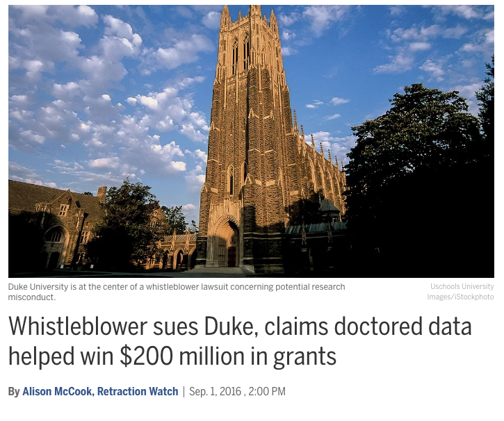
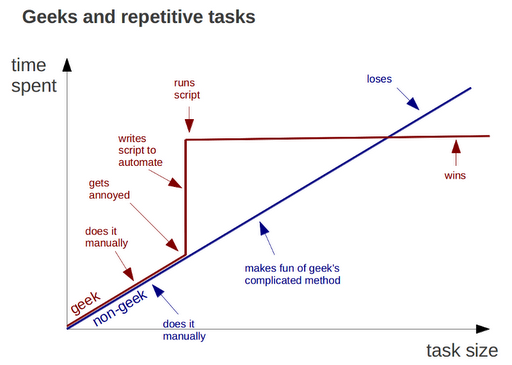
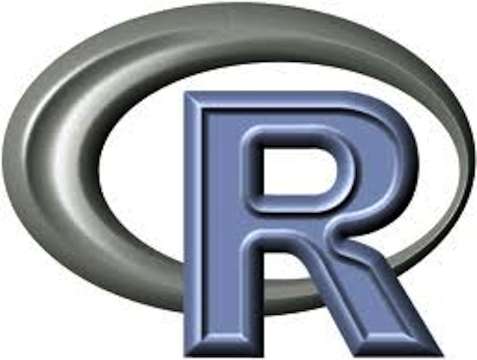

Open and reproducible research with R (and web scraping!)
Scott Chamberlain
UC Berkeley / rOpenSci


scotttalks.info/uofo17
LICENSE: CC-BY 4.0
open science/research
open research is badly needed
Retractions
research should be reproducible!
but doing for real is another issue
100 psychology studies
Emergent findings
open data can make a new finding possible
Cultural barriers
Lack of incentives (carrots)
Lack of pressure (sticks)
Getting scooped ()
Takes too much time! ()
Open science as a lego set

Open research as a lego set
open research may be hard to do
but - you can work on different components
and - individual components are useful on their own
you don't need to do it all at once
Open research components
Open Data
make your data open
funders/journals often requiring this anyway
future self will thank you
Open Data: Venues
- Include data with publications
- Data specific repositories
- Code sharing sites: e.g., GitHub
- so-called Institutional Repositories (IRs)
Open Access
make your papers open
funders often requiring this anyway
talk to your librarians!
Open Access: Preprints
Preprints increasingly allowed by publishers
++ preprint outlets
SSRN*, SocArXiv, PsyArXiv
talk to your librarians!
*: think twice maybe
Open Access: Green OA
Allowed to put up your "authors copy" on your website/etc.
the internet will surface it
Versioning
Versioning

source
Versioning
Including basically all research components:
- Code
- Data
- Metadata
- Text: manuscripts
Why use Versioning?
- failure proofs your work
- allows you to experiment freely!
- Metadata
- Text: manuscripts
Versioning: Git
Resources
- Happy Git with R
- Take a Software Carpentry course
- canonical link git source code and manual
Do all work programatically
from geeksaresexy.net/2012/01/05/geeks-vs-non-geeks-picture
Do all work programatically
Key to reproduciblity:
Most important person that wants to reproduce your work is you!
Do all work programatically
you and yourself
- one week from now
- two months from now
- & so on
Do all work programatically
allows others to:
- contribute to your work
- check your work
- build on top of your work
research programming languages
research programming languages
are:
the canvas on which to do research
important research programming languages



R language
Open/Rep. Research w/ R
What's the most important thing about R wrt open/reproducible?
R itself -> you're programming!
Open research ecosytsem

rOpenSci does:
the research workflow
Data acquisition
data manipulation/analysis/viz
writing
publish
the research workflow
Data acquisition
data manipulation/analysis/viz
writing
publish
the research workflow
Data acquisition
data manipulation/analysis/viz
writing
publish
the research workflow
Data acquisition
data manipulation/analysis/viz
writing
publish
the research workflow
Data acquisition
data manipulation/analysis/viz
writing
publish
Wrap Up
Open research is essential
Open research tools are useful on their own
rOpenSci: one of the tool makers
Challenges going forward
Largely cultural - will slowly change
Wrap Up
rOpenSci is a community project
Let us know what you need
Help us make better tools
Questions?
let's switch gears ...
Web Scraping
Web Scraping: Types
Scraping html
Download files
HTTP
FTP
etc.
APIs
going down: increasing organization and longevity
going up: increasing complexity for user (mostly)
Scraping: brief intro
to be done ...
Downloading files: brief intro
to be done ...
Downloading Exercise - 1
to be done ...
Downloading files: more info
to be done ...
Downloading Exercise - 2
to be done ...
APIs!
to be done ...
APIs Exercise - 1
to be done ...
APIs! more ...
to be done ...
APIs Exercise - 2
to be done ...